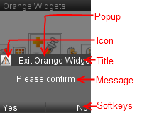

Warning:
This tutorial covers only Tiny Mobile Widgets versions.
On Mobile Widgets, use Alert or
Bubble prototype.
This chapter present the Tiny Mobile Widgets Popup.
Tiny Mobile Widgets provide a popup component. Developer can display this popup into widgets.

Note:
We use the softkeys tutorial code to
start this tutorial.
Tiny Mobile Widgets popup is displayed via a Message on the "Board" channel.
See "Board" channel chapter for more information about parameters.
Note:
Popup can display progress bar (see progress bar tutorial).
Use internationalization functions
to define popup labels.
We create a popup to ask if user would quit widget.
Current widget code (see softkeys tutorial for more information about this code):
This part explains how to get the popup result (right or left softkey).
Manager send message on
"Board" channel when user select right or
left softkey.
The process to read message on "Board" channel
is already defined (see softkeys tutorial).
We extend data_changed(...) function to process a new message: "ANSWER".
See "Board" channel chapter for more
information about "ANSWER" message.
New data_changed(...) function code:
This part explains how to hide a popup without user action.
We can send message POPUP_AUTO_HIDE to Manager.
This message hide the current popup.
In current example, we add a process to close popup after 5 seconds.
Note:
It is better to use TimeSensor
instead of setTimeout().